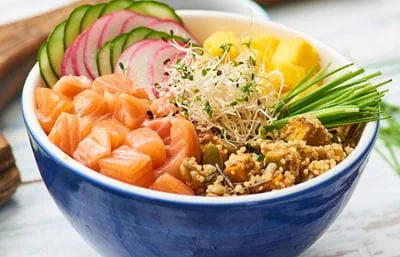

Poke de Salmão

Inspirada na culinária havaiana, essa receita refrescante de poke de salmão é ideal para os dias quentes. E é fácil e rápida de fazer – para matar aquela fome no meio da tarde ou fechar a noite com um jantar.
Ingredientes
- 1 xícara de chá de salada de grãos (ou grão cozido da sua preferência, como quinoa, grão de bico)
- 1 xícara de filé de salmão fresco cortado em cubos
- 1 manga descascada cortada em cubos
- 1 pepino cortado em fatias finas
- 1 rabanete cortado em fatias finas
- 2 colheres de sopa de sementes de gergelim
- 1/2 xícara de brotos de alfafa
- 2 cebolinhas cortadas em fatias finas ou cebolette
Molho
- 1/2 xícara de molho de soja
- 100 ml suco de laranja (equivalente ao suco de 1 laranja)
- 1 colher de chá de óleo de gergelim
- 1 colher de sopa de açúcar
- 1 colher de chá de gengibre sem casca ralado
Modo de preparo
- Em 2 tigelas individuais (12cm), divida e acomode os ingredientes do poke lado a lado.
- Em uma tigela pequena (10cm), junte todos os ingredientes do molho e misture bem.
- Regue o poke com o molho e finalize com o gergelim e a cebolinha fatiada.